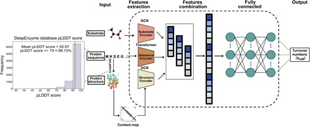
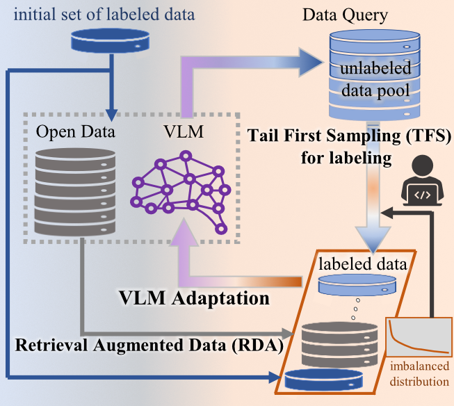

|
Tong Wang / 王彤 I am a PhD student in the Computer Vision Lab on the faculty of FST, University of Macau, advised by Prof. Shu Kong. Prior to joining the University of Macau, I earned my Master’s degree in Statistics from Chongqing University of Technology and received my Bachelor’s degree in Engineering from Tongji University. |
ResearchMy current research focuses on computer vision with Vision Language Models. During my Master's studies, my research focuses on AI4Bio. At that time, I focused specifically on predicting protein function by designing models that leverage both protein sequences and 3D structural data. |
|

|
DeepEnzyme: a robust deep learning model for improved enzyme turnover number prediction by utilizing features of protein 3D-structures
Tong Wang, Guangming Xiang, Siwei He, Liyun Su, Yuguang Wang, Xuefeng Yan, Hongzhong Lu Briefings in Bioinformatics, 2024 Github DeepEnzyme represents a pioneering effort in predicting enzymes' kcat values with improved accuracy and robustness compared to previous algorithms. |
|

|
Active Learning via Vision-Language Model Adaptation with Open Data
Tong Wang, Jiaqi Wang, Shu Kong arXiv, 2025 project page / arXiv / Github Our novel Tail First Sampling (TFS) strategy for AL, an embarrassingly simple yet effective method that prioritizes sampling data from underrepresented classes to label. Extensive experiments on standard benchmark datasets demonstrate that our ALOR achieves state-of-the-art performance, significantly surpassing existing methods. |
|
Template modified from Jon Barron |

{kind=link}